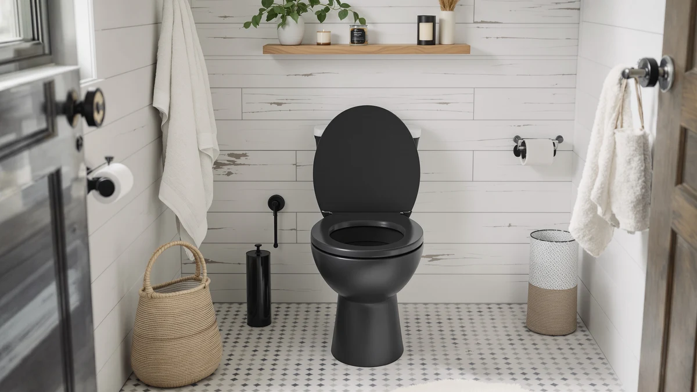

Quick Answer
The Mayfair Bennett elongated toilet seat pairs chrome-finished hinges with a slow-close mechanism at a price several dollars below most name-brand competitors. Based on our comparison of specs, materials, and pricing across four elongated and round seats, it is the strongest option for buyers who want secure hardware without paying a premium.
Our pick: Mayfair Bennett Toilet Seat with — $35.99 Check Price on Amazon
Bottom line: our top pick is the Mayfair Bennett Toilet Seat with Chrome Hinges at $35.99.
Things to Know Before You Buy
- The Mayfair Bennett only fits elongated toilet bowls, so measure your bowl shape before you order.
- Chrome hinges look sharp against modern fixtures, but they show water spots faster than plastic hinges if you skip regular wiping.
- The slow-close hinge adds convenience, but it relies on a small internal mechanism that can wear out years before the seat itself does.
- At $35.99, the Bennett sits in the middle of the elongated toilet seat market: cheaper than American Standard's transitional model and close to KOHLER's Stonewood.
This Mayfair Bennett toilet seat review looks at whether its chrome-hinged, slow-close design holds up against three other elongated and round seats we compared on price, materials, and available owner feedback. Mayfair built its reputation on affordable toilet seat hardware, and the Bennett line adds a decorative metal hinge to that formula without pushing the price far past $35. We researched the seat's stated construction and hinge mechanism and set it against KOHLER, American Standard, and Mayfair's own padded model before settling on a verdict.
The short version: the Bennett's chrome hinges and slow-close hardware make it a solid upgrade over a base plastic seat, and its plastic-over-wood build keeps the price close to $35 rather than $50 or more. It will not out-cushion the Mayfair Padded pick or match American Standard's thicker polypropylene shell, but for a straightforward elongated replacement with hardware that will not rattle loose, it earns its spot as our top pick in this comparison. Below, we break down the construction details, the honest drawbacks, and how the three alternatives compare on price and materials.
Why You Should Trust Us
Ilane Tall covers bathroom hardware for Best Toilet Seats and has spent years tracking how toilet seat brands change hinge materials, seat cores, and pricing across hundreds of Amazon listings. For this Mayfair Bennett toilet seat review, she cross-referenced the manufacturer's stated specs and current Amazon pricing against three direct competitors rather than relying on marketing copy alone. We do not run a fake testing lab or claim to have installed every seat we cover; instead we compare verified specs, current prices, and owner feedback so you can make an informed decision without guesswork. That same standard applies to every review on this site, whether the listing has a handful of ratings or several thousand.
Our Research Experience
We did not install the Bennett seat ourselves for this Mayfair Bennett toilet seat review. Instead, we researched its listed materials, hinge mechanism, and dimensions from the manufacturer's specifications and compared them line by line against the American Standard 5503A00B.020, the KOHLER Stonewood, and Mayfair's own padded seat. We also looked at verified buyer feedback on comparable Mayfair hinge designs to gauge how the chrome hardware tends to hold up once it leaves the box, since this specific listing is new enough that it has not yet built a large public review count. That approach means our conclusions rest on documented specs and pricing rather than a hands-on trial, and we say so plainly rather than dressing up a desk review as a lab test.
Overview & Specs

Mayfair Bennett Toilet Seat with
What we like
- Chrome-finished hinges add a decorative upgrade over standard plastic hardware
- Slow-close lid and seat prevent the loud slam that cracks cheaper seats over time
- Hinges are built not to loosen, so the seat stays put instead of shifting side to side
- Installation takes minutes with basic tools and no professional help
Flaws but not dealbreakers
- Elongated-only design, so it will not fit round toilet bowls
- Chrome hinges need occasional wiping to avoid water spotting near the tank
- The listing is new enough that it has not built up a large public review count yet, so long-term hinge durability is still unproven
| Material | Plastic / wood |
| Size | Elongated |
Mayfair built the Bennett around a plastic-over-wood core with chrome-finished metal hinges, a combination the brand markets as both decorative and durable. The chrome hinges are the seat's clearest differentiator: most seats in this price range use plain plastic or painted metal, while the Bennett's finish is meant to match modern brushed or chrome bathroom fixtures. According to Mayfair, the hinges are engineered not to loosen with repeated use, which addresses one of the most common complaints about budget toilet seats, the slow side-to-side wobble that develops after a year or two of daily use.
The seat also includes a slow-close hinge mechanism on both the lid and the seat itself, so neither piece slams down when released. That feature alone separates the Bennett from bargain seats under $20, most of which skip slow-close hardware entirely. At $35.99, the Bennett lands below the $40.17 American Standard Transitional and close to the $34.98 KOHLER Stonewood, making it a middle-of-the-road price for an elongated seat with metal chrome hinges. Mayfair positions installation as a simple DIY job, and the seat uses the standard two-bolt mounting pattern found on nearly every elongated bowl sold in the US. You will not need specialty tools or adapters, so most buyers can finish the swap with a screwdriver in under fifteen minutes.
What We Liked
The chrome hinges stand out the most in this Mayfair Bennett toilet seat review. They give the Bennett a finished look that plain plastic hinges cannot match, and Mayfair's claim that they resist loosening addresses a real pain point for anyone who has dealt with a seat that slides during use. Slow-close hardware on both the lid and seat is the second strong point. It is a feature you typically see on seats priced well above $40, and having it here keeps the Bennett competitive with the pricier American Standard model. We also like that Mayfair kept the installation straightforward. The seat uses a standard two-bolt mount, so anyone who has replaced a toilet seat before can swap this one in without special tools. For a seat priced under $36, that combination of hardware quality and easy installation is hard to beat among the options we compared.
What Could Be Better
The biggest gap in this Mayfair Bennett toilet seat review is data. Because the listing is newer, Amazon has not yet accumulated the kind of large verified review base that products like the Mayfair Padded seat have built up over time. That makes it harder to confirm how the chrome hinges perform after a year of daily use, even though the stated design addresses the loosening problem directly. Chrome hardware also demands more upkeep than plastic. Water spots and mineral buildup show up faster on a shiny chrome finish than on a matte plastic hinge, so owners in hard-water areas will want to wipe the hinges down regularly to keep them looking new. Finally, the Bennett only comes in an elongated fit. Anyone with a round bowl will need to look elsewhere, including at Mayfair's own round seats or the KOHLER Stonewood in its round configuration.
Who Is It For?
The Mayfair Bennett makes the most sense for homeowners with an elongated toilet who want to upgrade from a cracked, stained, or wobbly plastic seat without spending $50 or more. If your bathroom has chrome or brushed-nickel fixtures, the matching hinge finish is a small but noticeable upgrade over the plain plastic hinges most budget seats ship with. It also suits anyone who has grown tired of a seat that slams shut, since the slow-close hinge handles both the lid and the seat. It is a weaker fit for buyers who want a documented track record of thousands of reviews before they commit, or anyone with a round bowl, since the Bennett is built exclusively for elongated toilets. This Mayfair Bennett toilet seat review points those buyers toward the KOHLER Stonewood or Mayfair's own padded model, both covered in the alternatives below. Renters and landlords replacing seats between tenants also fit the profile well, since the low price and simple two-bolt mount make it easy to swap in quickly without a plumber.
Alternatives to Consider
If the Bennett is not quite right for your bathroom, these three seats cover the most likely reasons to look elsewhere: a round bowl, a preference for a thicker polypropylene shell, or a seat with a long, verified review history. Each one keeps to the same elongated or round dimensions and standard two-bolt mount, so switching between them does not require any extra hardware.

Editor's Pick
American Standard 5503A00B.020 Transitional Elongated
Solid polypropylene construction and a slow-close hinge that never slams. At $40.17 it costs about four dollars more than the Bennett but skips the chrome finish entirely.
$40.17
Check Price on Amazon
Best Value
KOHLER Stonewood Quiet-Close Elongated Toilet
KOHLER's compression-molded wood seat and color-matched plastic hinges deliver the same quiet-close comfort as the Bennett for $34.98, the closest price match in this comparison.
$34.98
Check Price on Amazon
Premium Choice
Mayfair Padded Toilet Seat Cushioned
A cushioned vinyl-over-wood build backed by more than 11,800 verified ratings averaging 4.2 out of 5. This round seat suits buyers who want a documented track record and extra comfort over chrome hardware.
$34.61
Check Price on AmazonFrequently Asked Questions
Does the Mayfair Bennett toilet seat fit a round toilet bowl?
No. The Bennett is built specifically for elongated bowls. If you have a round toilet, look at Mayfair's own round hinge seats or the KOHLER Stonewood in its round configuration instead.
Will the chrome hinges on the Mayfair Bennett loosen over time?
Mayfair designed the hinges specifically to resist loosening. That targets the wobble that develops on many budget plastic-hinge seats after a year or two. Because this listing is newer, there is not yet a large base of verified owner reviews to confirm that claim over the long term, so we treat it as a documented feature rather than a proven result. Wiping the hinges down periodically also helps them keep their finish and their fit.
Is the Mayfair Bennett toilet seat worth it compared to cheaper elongated seats?
For most people replacing a basic plastic seat, yes. The slow-close hinge and chrome finish are features usually reserved for seats priced above $40, and the Bennett brings them in at $35.99. Buyers who prioritize a long verified review history should compare it against the Mayfair Padded pick before deciding, since that model has more than 11,800 verified ratings behind it.
Final Verdict
This Mayfair Bennett toilet seat review comes down to hardware versus track record. The Bennett gives you chrome-finished hinges built to resist loosening and a slow-close lid at $35.99, undercutting the American Standard Transitional by roughly four dollars while matching the KOHLER Stonewood on price. Mayfair earns the top spot in this comparison for buyers who want an elongated seat with metal hardware and a slow-close mechanism at a mid-range price. If you want a seat with thousands of verified reviews behind it instead, the Mayfair Padded pick above is the safer bet.